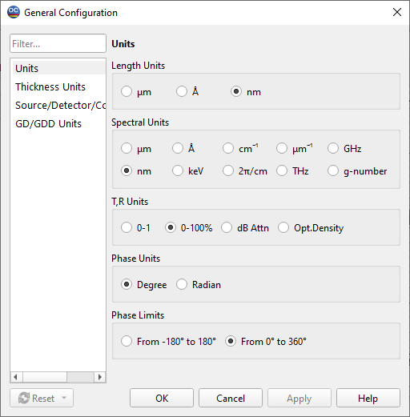

Units
Using the Units General Configuration option, you can customize the measurement units to be utilized throughout OptiChar.

Length units can be set to micrometers (1 µm = 10^-6 m), nanometers (1 nm = 10^-9 m), and Angstroms (1 Å = 10^-10 m).
Spectral units allow displaying spectral characteristics by wavelengths (measured according to the length unit setting), wavenumbers (in common spectroscopic units - cm^-1, in inverse microns μm^-1, or cyclic frequencies 2π/cm), frequencies (THz or GHz), or energies (in eV or keV). There is also an option that allows representing the wavelength in relative units (g-number), expressing the wavelength as a ratio to the Reference Wavelength, which can be specified on the Thickness Units page of this dialog.
The T, R units field allows switching between measuring transmittance and reflectance in relative units (0 to 1) or in percentage (0 to 100%). Logarithmic units include dB Attenuation units for the T and R. In this case, the result is presented using the formula y = 10 * log10(T or R or A). Another type of logarithmic unit is Optical Density, expressed as OptD = -log10 (T or R or A).
Psi and Delta units can be switched between Degrees and Radians.
Delta limits allow setting the range for phase characteristics from -180 to 180 degrees (from -π to π radians) or from 0 to 360 degrees (from 0 to 2π radians).